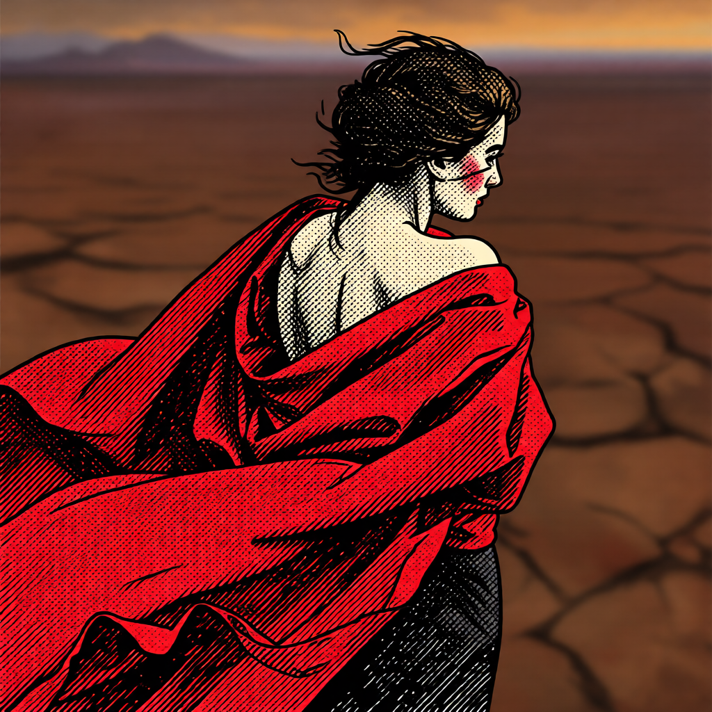

Burning Village Studios is my creative studio for art, game ideas, and short films. The studio has its own site, and that's where new work goes first.
A short sample. Each one has its own page on the studio site.
Noir Trailer
Short film · Grok Video, LTX 2.3, Qwen Image Edit, Suno, Premiere
A trailer for a noir story that doesn't exist yet. Rain, alleys, and a man with a tommy gun.
Desert Drive
3D short · Blender, Claude Opus 5.5 through Blender MCP, Grok Imagine, Meshy
A skeleton drives through a desert town with a lion in the passenger seat. The town is built in Blender: buildings, power lines, mountains, sculptures, and desert plants.
In the Booth, Star Fox
Music short · Grok Imagine, LTX-2.3 in ComfyUI
Star Fox steps into the booth and sings, with the Burning Village sign on fire behind him. Animated from a single still.

Ink Portrait
Cover art · Grok Imagine, Qwen-Image-Edit-2509 in ComfyUI
Cover art made for a music piece. Dense crosshatching and heavy ink lines, with one strong color: the red cloak against a dry, cracked desert.
The studio site has every piece, with notes on how each was made.
The studio is also on Instagram and TikTok as @burningvillagestudios.